HƯỚNG DẪN QUẢN TRỊ PHẦN MỀM
E-LEARNING BGT
MỤC LỤC
1.Đăng nhập hệ thống đào tạo trực tuyến
2.E-learning - Hệ thống học trực tuyến
3.1Cơ cấu tổ chức
3.2Quản trị người dùng
3.3Quản lý quyền
3.4Thêm dữ liệu bằng excel
3.5Theo dõi hoạt động
4.1Nhóm chức năng thư viện khóa học
4.1.1Thêm mới thư viện khóa học
4.1.2Sửa thông tin thư viện khóa học
4.1.3Khởi tạo nội dung khóa học
4.1.4Xóa khóa học trong thư viện khóa học
4.1.5Khôi phục khóa đào tạo
4.2Nhóm chức năng khóa đào tạo
4.2.1Khóa đào tạo online
4.2.2Khóa đào tạo tập trung
4.2.3Tạo mới khóa từ thư viện
4.3.1Danh sách học viên
4.3.2Cấp chứng chỉ cho học viên
5.1Danh sách khảo sát
5.2Danh sách câu hỏi
5.3Khôi phục khảo sát
5.4Thống kê sơ bộ
5.5Báo cáo đánh giá
GIỚI THIỆU QUY TRÌNH
Quản trị viên khi đăng nhập hệ thống sẽ thực hiện các chức năng như sau:
1. Đăng nhập hệ thống đào tạo trực tuyến
Học viên truy cập theo đường link
Học viên thực hiện theo 3 bước để đăng nhập vào ứng dụng:
- Bước 1: Nhập thông tin tài khoản
- Bước 2: Nhập thông tin mật khẩu, người dùng có thể ghi nhớ đăng nhập để thuận tiện cho lần đăng nhập sau bằng cách tích chọn “Ghi nhớ đăng nhập”
- Bước 3: Chọn “Đăng nhập” để thực hiện đăng nhập

Sau khi đăng nhập hệ thống thành công, giao diện hiển thị màn hình thống kê nhanh các thông số hệ thống
Vùng 1: thanh menu trái gồm các chức năng dành cho quản trị viên
Vùng 2: Hiển thị thông tin theo các chức năng tương ứng:
- Theo dõi số nhân viên bán hàng được đào tạo theo tháng
- Thống kê khóa học online, offline
- Theo dõi danh sách nhân viên bán hàng mới và nhân viên bán hàng cũ
2. E-learning - Hệ thống học trực tuyến
- Trên thanh menu trái, chọn chức năng “Hệ thống học trực tuyến”, hệ thống sẽ hiển thị giao diện với danh sách các khóa học như hình bên
- Quản trị viên chọn khóa học để xem chi tiết, đăng ký và học trực tuyến

3. Quản lý hệ thống
3.1 Cơ cấu tổ chức
Quản lý Tỉnh thành
Trên thanh menu trái thực hiện truy cập “Cơ cấu tổ chức” -> chọn chức năng “Tỉnh thành” giao diện quản lý hiển thị với các chức năng như sau:
- 1. Chức năng thêm mới thủ công Tỉnh thành
- 2. Chức năng sửa Tỉnh thành
- 3. Chức năng xóa Tỉnh thành

1. Chức năng thêm mới thủ công Tỉnh thành
Với chức năng thêm mới thủ công thực hiện thêm mới từng tỉnh thành theo khu vực, nhập tên tỉnh thành và mã
Những trường có dấu “*” bắt buộc phải nhập, sau khi nhập xong các thông tin chọn  để hoàn tất việc them mới Tỉnh thành
để hoàn tất việc them mới Tỉnh thành

2. Chức năng sửa Tỉnh thành
Nhập thông tin vào các trường cần chỉnh sửa, đối với những trường có dấu “*” là bắt buộc phải nhập thông tin như hình bên:

3. Chức năng xóa Tỉnh thành
Để thực hiện xóa Tỉnh thành người dùng chọn  , hệ thống hiển thị thông báo xác nhận xóa tỉnh thành,
chọn
, hệ thống hiển thị thông báo xác nhận xóa tỉnh thành,
chọn  để xóa, chọn để hủy
để xóa, chọn để hủy
Quản lý Đại lý
Trên thanh menu trái thực hiện truy cập “Cơ cấu tổ chức” -> chọn chức năng “Đại lý” giao diện quản lý hiển thị với các chức năng như sau:
- 1. Chức năng thêm mới thủ công Đại lý
- 2. Chức năng sửa Đại lý
- 3. Chức năng xóa Đại lý

1. Thêm mới Đại lý
Để thực hiện xóa Tỉnh thành người dùng chọn , hệ thống hiển thị thông báo xác nhận xóa tỉnh thành,
chọn để xóa, chọn để hủy
2. Chỉnh sửa Đại lý
Nhập thông tin vào các trường cần chỉnh sửa, đối với những trường có dấu “*” là bắt buộc phải nhập thông tin như hình bên:
3. Xóa Đại lý
- Bước 1: chọn đại lý cần xóa ->

- Bước 2: chọn
 để xóa, chọn
để xóa, chọn  để hủy
để hủy

Quản lý Điểm bán
Trên thanh menu trái thực hiện truy cập “Cơ cấu tổ chức” -> chọn chức năng “Điểm bán” giao diện quản lý hiển thị với các chức năng như sau:
- 1. Chức năng thêm mới thủ công Điểm bán
- 2. Chức năng sửa Điểm bán
- 3. Chức năng xóa Điểm bán

1. Thêm mới Điểm bán
Với chức năng thêm mới thủ công, thực hiện thêm mới từng điểm bán bằng cách nhập mã, tên, địa điểm điểm bán, lựa chọn Tỉnh thành, Đại lý và chọn Quản lý tương ứng
Những trường có dấu “*” là bắt buộc phải nhập, sau khi nhập xong các thông tin chọn  để hoàn tất việc thêm mới Điểm bán
để hoàn tất việc thêm mới Điểm bán

2. Chỉnh sửa Điểm bán
Nhập thông tin vào các trường cần chỉnh sửa, đối với những trường có dấu “*” là bắt buộc phải nhập
thông tin sau khi chỉnh sửa xong chọn  như hình bên:
như hình bên:
3. Xóa Điểm bán
- Bước 1: chọn điểm bán cần xóa ->

- Bước 2: chọn
 để xóa, chọn
để xóa, chọn  để hủy
để hủy

3.2 Quản trị người dùng
Danh sách người dùng
Trên thanh menu trái thực hiện truy cập “Quản trị người dùng” -> chọn chức năng “Danh sách người dùng” giao diện quản lý hiển thị với các chức năng như sau:
- 1. Chức năng thêm mới thủ công người dùng
- 2. Tải lên file excel danh sách người dùng
- 3. Chức năng sửa người dùng
- 4. Chức năng xóa người dùng

1. Thêm mới người dùng
Với chức năng thêm mới thủ công, thực hiện thêm mới từng người dùng bằng cách nhập các trường thông tin
Những trường có dấu “*” là bắt buộc phải nhập, sau khi nhập xong các thông tin chọn  để hoàn tất việc thêm mới Người dùng
để hoàn tất việc thêm mới Người dùng

2. Tải lên file excel người dùng
Để thực hiện import danh sách Người dùng từ file excel cần làm theo các bước sau:
- Bước 1: Chọn

- Bước 2: Điền các thông tin theo các trường trong file excel
- Bước 3: Kéo thả file vào phần tải file lên
- Bước 4: Tích chọn thêm mới để thực hiện thêm mới hoàn toàn hoặc Thêm mới và cập nhật để thực hiện cập nhật những Người dùng đã có trong hệ thống
- Bước 5: Chọn Import để hoàn tất việc tải lên file excel

3. Sửa người dùng
Nhập thông tin vào các trường cần chỉnh sửa, đối với những trường có dấu “*” là bắt buộc phải nhập thông tin sau khi chỉnh sửa xong chọn như hình bên:

4. Xóa người dùng
- Bước 1: chọn nhân viên cần gỡ ->
- Bước 2: chọn
 để gỡ người dùng, chọn
để gỡ người dùng, chọn  để hủy
để hủy

Chuyên viên kinh doanh
Trên thanh menu trái thực hiện truy cập “Quản trị người dùng” -> chọn chức năng “Chuyên viên kinh doanh” giao diện quản lý hiển thị với các chức năng như sau:
- 1. Chức năng thêm mới thủ công
- 2. Tải lên file excel danh sách CVKD
- 3. Chức năng phân quyền quản lý đại lý
- 4. Chức năng sửa CVKD
- 5. Chức năng gỡ CVKD

1. Thêm nhân viên mới
Với chức năng thêm nhân viên mới thủ công, thực hiện thêm mới từng người dùng bằng cách nhập các trường thông tin
Những trường có dấu “*” là bắt buộc phải nhập, sau khi nhập xong các thông tin chọn  để hoàn tất việc thêm mới
để hoàn tất việc thêm mới
2. Thêm nhân viên có sẵn
Để gán quyền giám sát thị trường cho nhân viên có sẵn trong hệ thống người dùng nhập tên người dùng chọn  để tìm người dùng hoặc chọn dấu tích vào ô để chọn người cần gán quyền sau đó chọn
để tìm người dùng hoặc chọn dấu tích vào ô để chọn người cần gán quyền sau đó chọn  để thêm.
để thêm.

3. Phân quyền quản lý đại lý
Để thực hiện gán quyền đại lý người dùng chọn vào biểu tượng giao diện hiển thị các đại lý đang giám sát như sau:
4. Chỉnh sửa người dùng
Nhập thông tin vào các trường cần chỉnh sửa, đối với những trường có dấu “*” là bắt buộc phải nhập thông tin sau khi chỉnh sửa xong chọn  như hình bên
như hình bên
5. Gỡ người dùng
- Bước 1: chọn nhân viên cần gỡ ->

- Bước 2: chọn
 để gỡ người
dùng khỏi điểm bán, chọn
để gỡ người
dùng khỏi điểm bán, chọn  để hủy
để hủy

Quản lý giảng viên
Trên thanh menu trái thực hiện truy cập “Quản trị người dùng” -> chọn chức năng “giảng viên” giao diện quản lý hiển thị với các chức năng như sau:
- 1. Chức năng thêm mới thủ công giảng viên
- 2. Tải lên file excel danh sách giảng viên
- 3. Chức năng sửa thông tin giảng viên
- 4. Chức năng xóa giảng viên

1. Thêm mới thủ công giảng viên
Với chức năng thêm mới giảng viên thủ công, thực hiện thêm mới từng giảng viên bằng cách nhập các trường thông tin như hình bên
Những trường có dấu “*” là bắt buộc phải nhập, sau khi nhập xong các thông tin chọn  để hoàn tất việc thêm mới
để hoàn tất việc thêm mới

2. Tải lên file exel giảng viên
Để thực hiện import danh sách giảng viên từ file excel cần làm theo các bước sau:
- Bước 1: Chọn

- Bước 2: Điền các thông tin theo các trường trong file excel
- Bước 3: Kéo thả file vào phần tải file lên
- Bước 4: Tích chọn thêm mới để thực hiện thêm mới hoàn toàn hoặc Thêm mới và cập nhật để thực hiện cập nhật những giảng viên đã có trong hệ thống
- Bước 5: Chọn Import để hoàn tất việc tải lên file excel

3. Chỉnh sửa thông tin giảng viên
Nhập thông tin vào các trường cần chỉnh sửa, đối với những trường có dấu “*” là bắt buộc phải nhập thông tin sau khi chỉnh sửa xong chọn  như hình bên:
như hình bên:
4. Xóa giảng viên
Để thực hiện xóa giảng viên chọn  , hệ thống hiển thị thông báo xác nhận xóa người dùng, chọn
, hệ thống hiển thị thông báo xác nhận xóa người dùng, chọn  để xóa, chọn
để xóa, chọn  để hủy
để hủy

Quản lý học viên
Trên thanh menu trái thực hiện truy cập “Quản trị người dùng” -> chọn chức năng “Học viên” giao diện quản lý hiển thị với các chức năng như sau:
- 1. Chức năng thêm mới thủ công học viên
- 2. Tải lên file excel danh sách học viên
- 3. Chức năng sửa thông tin học viên
- 4. Chức năng xóa học viên
1. Thêm mới thủ công học viên
Với chức năng thêm mới học viên thủ công, thực hiện thêm mới từng học viên bằng cách nhập các trường thông tin như hình bên
Những trường có dấu “*” là bắt buộc phải nhập, sau khi nhập xong các thông tin chọn 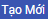 để hoàn tất việc thêm mới

2. Tải lên file excel học viên
Để thực hiện import danh sách học viên từ file excel cần làm theo các bước sau:
- Bước 1: Chọn

- Bước 2: Điền các thông tin theo các trường trong file excel
- Bước 3: Kéo thả file vào phần tải file lên
- Bước 4: Tích chọn thêm mới để thực hiện thêm mới hoàn toàn hoặc Thêm mới và cập nhật để thực hiện cập nhật những học viên đã có trong hệ thống
- Bước 5: Chọn Import để hoàn tất việc tải lên file excel

3. Chỉnh sửa học viên
Nhập thông tin vào các trường cần chỉnh sửa, đối với những trường có dấu “*” là bắt buộc phải nhập thông tin sau khi chỉnh sửa xong chọn  như hình bên
như hình bên
4. Xóa học viên
Để thực hiện xóa học viên chọn  , hệ thống hiển thị thông báo xác nhận xóa người dùng, chọn
, hệ thống hiển thị thông báo xác nhận xóa người dùng, chọn  để xóa, chọn
để xóa, chọn  để hủy
để hủy

Khôi phục người dùng
Trên thanh menu trái thực hiện truy cập “Quản trị người dùng” -> chọn chức năng “Khôi phục người dùng” giao diện quản lý hiển thị với các chức năng như sau:
- 1. Chức năng sửa thông tin người dùng
- 2. Chức năng khôi phục tài khoản bị khóa
- 3. Xóa vĩnh viễn tài khoản

1. Chỉnh sửa thông tin
Nhập thông tin vào các trường cần chỉnh sửa, đối với những trường có dấu “*” là bắt buộc phải nhập các trường thông tin như hình bên:
2. Khôi phục tài khoản
Để thực hiện khôi phục tài khoản người quản trị tích vào ô để chọn tài khoản cần khôi phục sau đó chọn 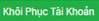, hệ thống hiển thị thông báo để xác nhận chọn  , chọn
, chọn  để hủy.
để hủy.
3. Xóa vĩnh viễn tài khoản
Chọn  để thực hiện xóa hoàn toàn tài khoản khỏi hệ thống
Để xác nhận chọn
để thực hiện xóa hoàn toàn tài khoản khỏi hệ thống
Để xác nhận chọn  , chọn để hủy
, chọn để hủy
3.3 Quản lý quyền
Danh sách người dùng
Trên thanh menu trái, chọn chức năng “Quản lý hệ thống” chọn “Quản lý quyền”, hệ thống sẽ hiển thị danh sách các quyền như hình bên
- 1. Chức năng thêm mới thủ công quyền
- 2. Chức năng xem phân bổ quyền
- 3. Xóa quyền
1. Thêm mới thủ công
Với chức năng thêm mới thủ công, thực hiện thêm mới từng quyền bằng cách nhập các trường thông tin như bên
Những trường có dấu “*” là bắt buộc phải nhập, sau khi nhập xong các thông tin chọn  để hoàn tất việc thêm mới
để hoàn tất việc thêm mới
2. Sửa quyền
Để sửa quyền Quản trị viên chọn biểu tượng  và cập nhật quyền bằng cách tích chọn hoặc bỏ tích để cập nhật các quyền truy cập hệ thống, sau khi chỉnh sửa xong chọn như hình bên
và cập nhật quyền bằng cách tích chọn hoặc bỏ tích để cập nhật các quyền truy cập hệ thống, sau khi chỉnh sửa xong chọn như hình bên
3. Xóa quyền
Để xóa quyền chọn biểu tượng , những quyền không có biểu tượng này là những quyền mặc định của hệ thống bắt buộc phải có, những quyền này chỉ có thể chỉnh sửa mà không có chức năng xóa
Khi chọn xóa hệ thống hiển thị thông báo hỏi có chắc chắn muốn xóa không, chọn OK để xóa Cancel để hủy
3.4 Thêm dữ liệu bằng excel
Trên thanh menu trái thực hiện truy cập “Quản lý hệ thống” -> chọn chức năng “Thêm dữ liệu bằng excel”
Để thực hiện import danh sách giảng viên từ file excel cần làm theo các bước sau:
- Bước 1: Chọn 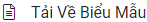
- Bước 2: Điền các thông tin theo các trường trong file excel
- Bước 3: Kéo thả file vào phần tải file lên
- Bước 4: Tích chọn thêm mới để thực hiện thêm mới hoàn toàn hoặc Thêm mới và cập nhật để thực hiện cập nhật những thông tin về người dùng đã có trong hệ thống
- Bước 5: Chọn Import để hoàn tất việc tải lên file excel

3.5 Theo dõi hoạt động
Trên thanh menu trái thực hiện truy cập “Quản lý hệ thống” -> chọn chức năng “Activity Log” giao diện quản lý hiển thị với các chức năng như bên:
Người dùng có thể xem danh sách Log hệ thống theo các tiêu chí lựa chọn như sau:
1. Xem theo cơ cấu tổ chức gồm:
- Người dùng
- Cơ cấu tổ chức
- Khóa đào tạo
- Quyền
2. Xem theo hành động gồm:
- Create
- Update
- Delete
- Restore
- Add
- Remove
- Delete recycle bin
4. Quản lý đào tạo
4.1 Nhóm chức năng thư viện khóa học
Trên thanh menu trái, NSD thực click vào Menu Quản lý đào tạo, chọn chức năng Thư viện khóa học. Các chức năng chính trong Thư viện khóa học
- 4.1.1 Thêm mới thư viện khóa học
- 4.1.2 Sửa thông tin thư viện khóa học
- 4.1.3 Khởi tạo nội dung khóa học
- 4.1.4 Xóa khóa học
- 4.1.5 Khôi phục khóa học
4.1.1 Thêm mới thư viện khóa học
Bước 1: Tại giao diện chính Thư viện khóa học, NSD click vào button Thêm mới thư viện khóa học thủ công
Bước 2: NSD nhập các thông tin của khóa học bao gồm: Hình ảnh đại diện của khóa học; Mã khóa học; Tên khóa học; Điểm qua môn; Mô tả khóa học.
Lưu ý: các trường dánh dấu (*) là các trường NSD bắt buộc phải nhập
Bước 3: Click button Tạo mới để hoàn thành thêm mới khóa học, hệ thống sẽ hiển thị thông báo Khởi tạo khóa học thành công.
- Click OK để kết thúc thao tác.
- Click Hủy để hủy thao tác thêm mới thư viện khóa học.
4.1.2 Sửa thông tin thư viện khóa học
Bước 1: Tại cột Hành động trên Danh sách thư viện khóa học, NSD thực hiện click button  . Hệ thống hiển thị giao diện “Chỉnh sửa thư viện khóa học”.
. Hệ thống hiển thị giao diện “Chỉnh sửa thư viện khóa học”.
Bước 2: Nhập các thông tin cần thay đổi.
Bước 3: Click button Sửa để lưu thông tin mới. Hệ thống hiển thị màn hình xác nhận sửa thông tin khóa học thành công.
- Click button OK để kết thúc thao tác
- Click button Hủy để hủy thao tác sửa thông tin khóa học
4.1.3 Khởi tạo nội dung khóa học
TẠO MỚI NỘI DUNG KHÓA HỌC
- Bước 1: Tại màn hình giao diện Danh sách thư viện khóa học, NSD tích chọn icon
 . NSD thực hiện click icon góc bên phải màn hình, chọn Bật chế độ chỉnh sửa
. NSD thực hiện click icon góc bên phải màn hình, chọn Bật chế độ chỉnh sửa - Bước 2: Thêm chủ đề vào khóa học: NSD thực hiện click vào Add Topic. Hệ thống hiển thị màn hình nhập số lượng chủ đề trong khóa học. NSD nhập số phân mục và click button Add Topic (Hình 1)
- Bước 3: Thêm hoạt động/ tài nguyên vào chủ đề cho khóa học: NSD click icon < + Thêm hoạt động hoặc tài nguyên -> Tích chọn Interactive Content -> Click button Thêm (Hình 2)
-
Bước 4: Soạn nội dung cho khóa học (Hình 3): NSD thực hiện nhập tất cả các nội dung sau:
+ Mô tả: Nhập mô tả nội dung cho khóa học
+ Chọn Documentation Tool
+ Title: Nhập tiêu đề khóa học
+ Heading: nhập heading khóa học
-
Bước 5: Tạo page cho từng hoạt động
+ Page type: chọn Standard page
+ Title: nhập tiêu đề cho page
- Element type: đối với dữ liệu dạng text, chọn Text và thực hiện nhập dữ liệu vào ô
 . Đối với dữ liệu ảnh, tích chọn Image và click button
. Đối với dữ liệu ảnh, tích chọn Image và click button - Thêm Element vào page: Tích chọn


- Element type: đối với dữ liệu dạng text, chọn Text và thực hiện nhập dữ liệu vào ô
- Bước 6: Click button Lưu và trở về khóa học/ Lưu và cho xem để hoàn thành thao tác lưu hoạt động cho khóa học. Click button Hủy bỏ để hủy bỏ hoạt động cho khóa học vừa soạn thảo.

Hình 1

Hình 2

Hình 3
CHỈNH SỬA NỘI DUNG KHÓA HỌC
- Bước 1: Chọn Menu Quản lý đào tạo -> Thư viện khóa học
- Bước 2: Nhập thông tin tìm kiếm khóa học cần chỉnh sửa: Tìm kiếm theo tên khóa học hoặc mã khóa học -> Click button Tìm (Hình 1)
-
Bước 3: NSD chọn khóa học cần chỉnh sửa trong Tổng số thư viện khóa học hiện tại, click button . NSD có thể chỉnh sửa các thông tin:
+ Thêm chủ đề (Topic) vào khóa học: NSD thực hiện click button Add Topic và thực hiện tương tự như Bước 2 của phần Tạo mới nội dung khóa học
+ Chỉnh sửa chủ đề có sẵn trong khóa học: click Chỉnh sửa -> Chọn Edit topic. Thực hiện chỉnh sửa tên chủ đề, chỉnh sửa tóm tắt -> click button Lưu những thay đổi để lưu thông tin mới. ( Hình 2) (Hình 3)
+ Thêm hoạt động hoặc tài nguyên cho chủ đề: NSD thực hiện click button < +Thêm hoạt động hoặc tài nguyên> và thực hiện tương tự như Bước 3
+ Chỉnh sửa hoạt động hoặc tài nguyên đã có trong chủ đề:
- Sửa tên Hoạt động/chủ đề: tại chủ đề cần chỉnh sửa, click button
- Chỉnh sửa các cài đặt trong chủ đề: tại chủ đề cần chỉnh sửa, click button Chỉnh sửa -> chọn Chỉnh sửa các cài đặt. NSD chỉnh sửa thông tin và click button Lưu và trở về khóa học/ Lưu và cho xem để lưu thông tin mới. Click button Hủy bỏ để hủy thao tác sửa thông tin.

Hình 1

Hình 2

Hình 3
TẠO BÀI KIỂM TRA TRONG KHÓA HỌC
Tại màn hình giao diện Danh sách thư viện khóa học, NSD chọn khóa học cần thêm đề thi và tích chọn icon  .
.
-
Bước 1: NSD thực hiện tạo add Topic và Thêm hoạt động /tài nguyên: (Hình 1)
+ Thêm chủ đề của bài kiểm tra: NSD thực hiện click vào . Hệ thống hiển thị màn hình nhập số lượng chủ đề trong Topic. NSD nhập số phân mục và click button Add Topic
+ Thêm hoạt động/ tài nguyên của bài kiểm tra: Tại góc dưới bên phải của mỗi chủ đề, NSD thực hiện click icon (Thêm hoạt động hoặc tài nguyên) -> Tích chọn Đề thi -> Click button Thêm (Hình 2)
+ Tại mục Editor, NSD thực hiện chọn Documentation Tool) -> Title: Nhập tiêu đề cho hoạt động/tài nguyên. -> Click button Lưu và trở về khóa học / Lưu và cho xem để lưu. Click button Hủy bỏ để hủy bỏ thao tác (Hình 3)
-
Bước 2: Tạo câu hỏi cho đề thi: Sau bước 1, hệ thống hiển thị màn hình cho phép tạo câu hỏi cho đề thi, NSD tích chọn button Chỉnh sửa đề thi và thực hiện tuần tự các bước sau:
+ Chọn
 -> Chọn a new question
-> Chọn a new question+ Chọn Multiple Choise sau đó click button

+ Click button Lưu những thay đổi để thực hiện lưu câu hỏi.(Hình 4)

Hình 1
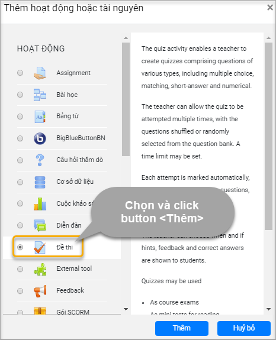Hình 2
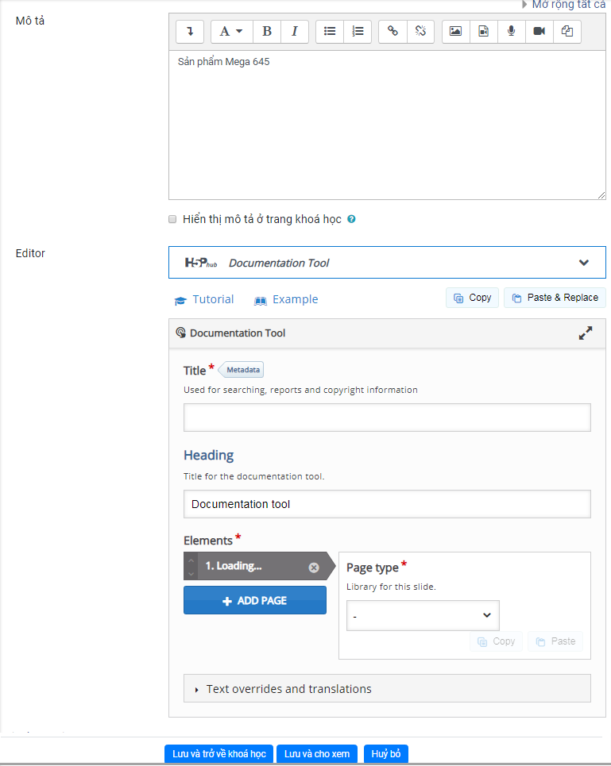Hình 3
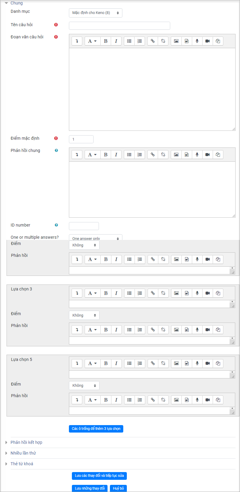Hình 4
TẠO GAME THỰC HÀNH TRÊN MÁY BÁN HÀNG
-
Bước 1: Tại màn hình giao diện Danh sách thư viện khóa học, NSD chọn khóa học cần thêm đề thi và tích chọn icon

-
Bước 2: NSD thực hiện tạo add Topic và Thêm hoạt động /tài nguyên:
- Thêm chủ đề của Game: NSD thực hiện click vào Add Topic. Hệ thống hiển thị màn hình nhập số lượng chủ đề trong Topic. NSD nhập số phân mục và click button Add Topic
- Thêm hoạt động/ tài nguyên của Game: Tại góc dưới bên phải của mỗi chủ đề, NSD thực hiện click icon Thêm hoạt động hoặc tài nguyên -> Tích chọn Game BGT -> Click button Thêm (Hình 1)
- NSD thực hiện nhập các thông tin Tên, Mô tả của Hoạt động -> Tích button Lưu và trở về khóa học / Lưu và cho xem để thực hiện lưu lại thao tác.
- Hệ thống hiển thị màn hình cho phép thiết lập game BGT(Hình 2)
Hình 1
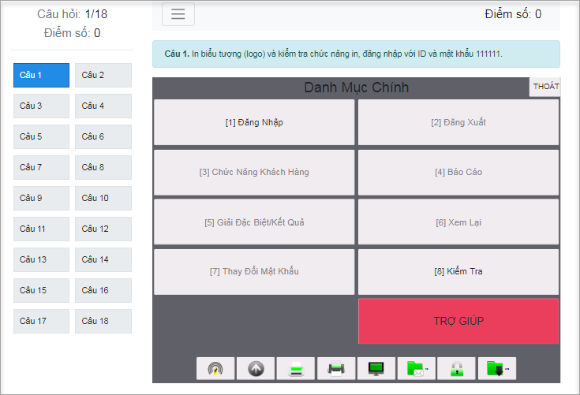Hình 2
4.1.4 Xóa khóa học trong thư viện khóa học
- Tại cột Hành động trên Danh sách thư viện khóa học, NSD thực hiện click button . Hệ thống hiển thị màn hình xác nhận Xóa khóa học trong thư viện
-
NSD thực hiện xác nhận thao tác xóa:
- Click button OK để xác nhận xóa khóa học
- Click button Cancel để hủy thao tác xóa khóa học
- Màn hình giao diện xác nhận xóa khóa học trong thư viện khóa học:
4.1.5 Khôi phục khóa đào tạo
NSD thực click vào Menu Quản lý đào tạo, chọn chức năng Khóa đào tạo -> Khôi phục khóa đào tạo. Hệ thống hiển thị giao diện “Khôi phục khóa đào tạo” (Hình 1)
-
Bước 1: Tìm kiếm khóa đào tạo cần khôi phục
- Tìm kiếm trong Thư viện khóa học: Click button tại listbox Chọn danh mục khóa học, chọn Khóa đào tạo cần tìm kiếm
- Tìm kiếm theo ngày xóa: Nhập ngày tại texbox Ngày xóa khóa đào tạo:
- Tìm kiếm theo mã hoặc theo tên: nhập mã / tên khóa đào tạo , Click button Tìm
-
Bước 2: Khôi phục: Tại màn hình Danh sách tổng số khóa đào tạo muốn khôi phục:
- Click button để khôi phục khóa đào tạo. Hệ thống hiển thị màn hình xác nhận khôi phục khóa đào tạo. Click OK để khôi phục khóa đạo tạo; click Cancel để hủy khôi phục khóa đào tạo
- Click button để xóa hoàn toàn khóa đào tạo ra khỏi hệ thống.
 Hình 1
Hình 1
4.2 Nhóm chức năng khóa đào tạo
4.2.1 Khóa đào tạo online
TẠO MỚI KHÓA ĐÀO TẠO ONLINE
- Bước 1: Tại khung menu bên trái, NSD chọn menu Quản lý đào tạo -> Khóa đào tạo -> Khóa đào tạo online. NSD click button
 . Hệ thống hiển thị màn hình Tạo mới khóa đào tạo (Hình 1)
. Hệ thống hiển thị màn hình Tạo mới khóa đào tạo (Hình 1) - Bước 2: NSD nhập các thông tin tại các ô textbox: Hình ảnh đại diện của khóa học; Mã khóa học; Tên khóa học; Danh mục khóa học; Điểm qua môn; Thời gian bắt đầu; Thời gian kết thúc; Cho phép học viên tự đăng ký; Mô tả khóa học
-
Bước 3: Click button Tạo mới để hoàn thành thêm mới khóa đào tạo online (Hình 2).
- NSD Click button OK để kết thúc thao tác
- Click button Hủy để hủy thao tác thêm mới thư viện khóa học.

Hình 1

Hình 2
TẠO NỘI DUNG CHO KHÓA ĐÀO TẠO ONLINE
- Bước 1: Tại khung menu bên trái, NSD chọn menu Quản lý đào tạo -> Khóa đào tạo -> Khóa đào tạo online -> click icon

- Bước 2: Tại màn hình cho phép tạo nội dung khóa đào tạo online. NSD thực hiện click icon -> chọn chức năng Bật chế độ chỉnh sửa (Hình 1)
- Bước 3: Thêm chủ đề vào khóa học: click
 . NSD nhập số phân mục và click button Add Topic (Hình 2)
. NSD nhập số phân mục và click button Add Topic (Hình 2) - Bước 4: Thêm hoạt động/ tài nguyên vào chủ đề cho khóa đào tạo: Tại góc dưới bên phải của mỗi chủ đề, NSD thực hiện click icon
 -> Tích chọn Interactive Content -> Click button Thêm (Hình 3)
-> Tích chọn Interactive Content -> Click button Thêm (Hình 3) -
Bước 5: Soạn nội dung cho khóa đào tạo:
- Mô tả: Nhập mô tả nội dung cho khóa học
- Chọn Documentation Tool
- Title: Nhập tiêu đề khóa đào tạo
- Heading: nhập heading khóa đào tạo
-
Bước 6: Tạo page cho từng hoạt động
- Page type: chọn Standard page
-
Title: nhập tiêu đề cho page
- Element type: đối với dữ liệu dạng text, chọn Text và thực hiện nhập dữ liệu vào ô
 . Đối với dữ liệu ảnh, tích chọn Image và click button
. Đối với dữ liệu ảnh, tích chọn Image và click button  để tải ảnh từ máy tính cá nhân lên hệ thống.
để tải ảnh từ máy tính cá nhân lên hệ thống. - Thêm Element vào page: Tích chọn

- Element type: đối với dữ liệu dạng text, chọn Text và thực hiện nhập dữ liệu vào ô
- Thêm page cho hoạt động: Tích chọn
- Click button Lưu và trở về khóa học/ Lưu và cho xem để hoàn thành thao tác lưu hoạt động cho khóa học (Hình 4)
-
Click button
để hủy bỏ hoạt động cho khóa học vừa soạn thảo.
Hình 1

Hình 2

Hình 3

Hình 4
GÁN HỌC VIÊN/ GIẢNG VIÊN VÀO KHÓA ĐÀO TẠO ONLINE
Tại màn hình Danh sách thống kê khóa đào tạo online, NSD click . Hệ thống hiển thị màn hình Ghi danh khóa học
-
Cách 1: Gán học viên/giảng viên vào khóa đào tạo bằng chức năng Tải lên file excel. (Hình 1)
- NSD thực hiện click vào Tải lên file excel hoặc click icon

- NSD click Tải về biểu mẫu để tải biểu mẫu excel về máy tính cá nhân -> thực hiện nhập dữ liệu học viên vào file excel
- NSD thực hiện kéo – thả file excel vừa nhập dữ liệu từ máy tính cá nhân vào vùng tạo sẵn trên hệ thống -> click button
 để hoàn thành thao tác. NSD click button
để hoàn thành thao tác. NSD click button  để hủy bỏ thao tác. (Hình 2)
để hủy bỏ thao tác. (Hình 2)
- NSD thực hiện click vào Tải lên file excel hoặc click icon
-
Cách 2. Gán học viên/giảng viên vào khóa đào tạo bằng chức năng Ghi danh khóa đào tạo. (Hình 3)
-
NSD thực hiện click vào Ghi danh khóa đào tạo hoặc click icon
 . Hệ thống hiển thị màn hình ghi danh khóa đào tạo với 03 phân vùng chính: (Hình 3)
. Hệ thống hiển thị màn hình ghi danh khóa đào tạo với 03 phân vùng chính: (Hình 3)- Vùng 1: Tìm kiếm học viên/giảng viên để gán vào khóa đào tạo online;
- Vùng 2: Danh sách người dùng cần ghi danh;
- Vùng 3: Danh sách người dùng đã ghi danh vào khóa đào tạo.
- Tìm kiếm người dùng cần ghi danh: Tại vùng 1, NSD nhập các điều kiện tìm kiếm: Loại người dùng ( chọn trong listbox: học viên hoặc giảng viên); Nhập tên người dùng cần tìm kiếm -> Click button
 . Hệ thống hiển thị màn hình Danh sách người dùng cần ghi danh thỏa mãn điều kiện tìm kiếm
. Hệ thống hiển thị màn hình Danh sách người dùng cần ghi danh thỏa mãn điều kiện tìm kiếm - Ghi danh người dùng vào khóa đào tạo: Tại vùng 2 trong Danh sách người dùng cần ghi danh, NSD thực hiện tích chọn người dùng muốn gán vào khóa đào tạo -> click icon
 để hoàn thành thao tác. Hệ thống hiển thị màn hình ghi danh khóa đào tạo thành công. (Hình 4)
để hoàn thành thao tác. Hệ thống hiển thị màn hình ghi danh khóa đào tạo thành công. (Hình 4) - Rút học viên khỏi khóa đào tạo: Tại vùng 3, trong màn hình Danh sách người dùng đã ghi danh vào khóa đào tạo, NSD thực hiện tích chọn người dùng muốn rút khỏi khóa đào tạo, click button
 . Hệ thống hiển thị màn hình xác nhận hủy ghi danh khóa đào tạo thành công.
. Hệ thống hiển thị màn hình xác nhận hủy ghi danh khóa đào tạo thành công.
-
Hình 1
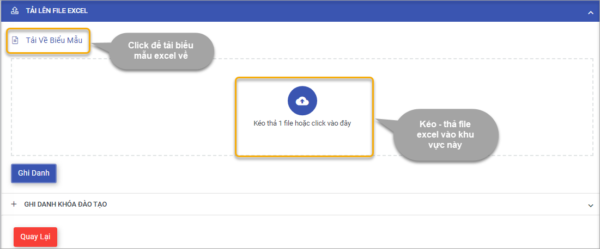Hình 2

Hình 3

Hình 3
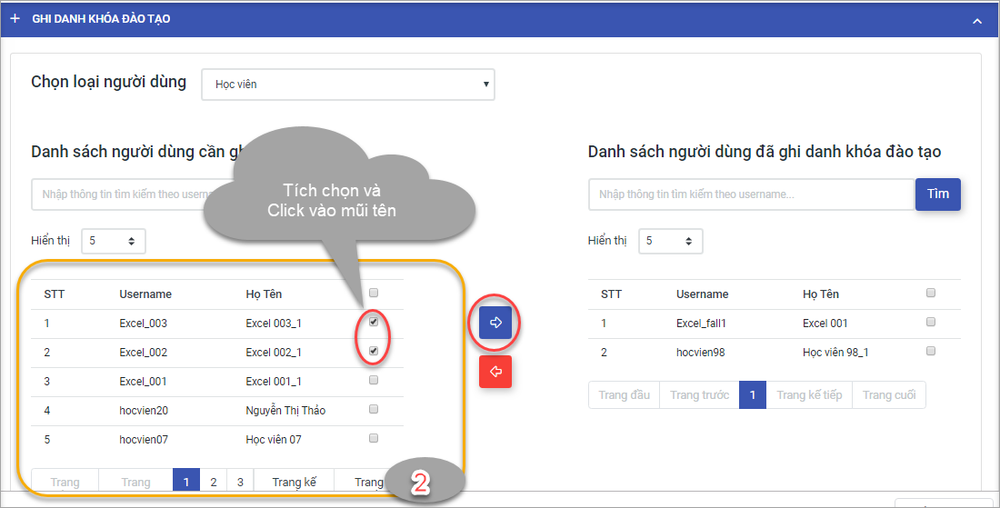Hình 4
XEM CHI TIẾT KHÓA ĐÀO TẠO ONLINE
- Tại màn hình Danh sách thống kê khóa đào tạo online trong kết quả tìm kiếm, NSD click vào mã khóa đào tạo online . (Hình 1)
-
Hệ thống hiển thị màn hình cho phép xem chi tiết thông tin của khóa đào tạo online được chọn (Hình 2), bao gồm:
- Ảnh đại diện khóa học
- Tên khóa học
- Mã khóa học
- Danh mục khóa học
- Điểm qua môn
- Thời gian bắt đầu
- Thời gian kết thúc
- Mô tả khóa học
- Danh sách học viên trong khóa học
- Tiến trình học của từng học viên
- Bảng điểm chi tiết của từng học viên
- Trạng thái của từng học viên
- Sửa thông tin khóa đào tạo online: NSD click chọn button
 , hệ thống hiển thị màn hình Chỉnh sửa thông tin khóa đào tạo. NSD thực hiện nhập các thông tin mới -> click button
, hệ thống hiển thị màn hình Chỉnh sửa thông tin khóa đào tạo. NSD thực hiện nhập các thông tin mới -> click button  để hoàn thành thao tác. NSD có thể click button
để hoàn thành thao tác. NSD có thể click button  để hủy thao tác sửa thông tin khóa đào tạo online. (Hình 3)
để hủy thao tác sửa thông tin khóa đào tạo online. (Hình 3)

Hình 1

Hình 2

Hình 3
PHÊ DUYỆT/ HỦY PHÊ DUYỆT KHÓA ĐÀO TẠO ONLINE
NSD chọn menu Quản lý đào tạo -> Khóa đào tạo -> Khóa đào tạo online. trong cột Trạng thái
- NSD click chọn nút sang màu xanh
 để phê duyệt khóa học
để phê duyệt khóa học - NSD click chọn nút sang màu trắng
 để hủy phê duyệt khóa học
để hủy phê duyệt khóa học
TÌM KIẾM KHÓA ĐÀO TẠO ONLINE
- Tại khung menu Dashboard, NSD chọn menu Quản lý đào tạo -> Khóa đào tạo -> Khóa đào tạo online. NSD thực hiện nhập các điều kiện tìm kiếm -> click button
 . (Hình 1)
. (Hình 1) -
Hệ thống hiển danh sách thống kê khóa đào tạo phù hợp kết quả tìm kiếm (Hình 2)
- NSD có thể xem thống kê Tổng số khóa đào tạo hiện tại phù hợp kết quả tìm kiếm
- NSD click button Trang cuối để để nhảy đến trang hiển thị danh sách cuối
- NSD click button Trang đầu để để nhảy đến trang hiển thị danh sách đầu tiên
- NSD click button Trang trước/ Trang kế tiếp để để nhảy đến trang hiển thị danh sách đầu tiên để chuyển lần lượt trang hiển thị danh sách khóa đào tạo
Hình 1

Hình 2
XÓA KHÓA ĐÀO TẠO ONLINE
Tại màn hình Danh sách thống kê khóa đào tạo online trong kết quả tìm kiếm, NSD click icon  . Hệ thống hiển thị màn hình xác nhận xóa khóa đào tạo online.
. Hệ thống hiển thị màn hình xác nhận xóa khóa đào tạo online.
- NSD click button
 để hoàn thành thao tác xóa khóa đào tạo
để hoàn thành thao tác xóa khóa đào tạo - NSD click button
 để hủy thao tác xóa khóa đào tạo
để hủy thao tác xóa khóa đào tạo

4.2.2 Khóa đào tạo tập trung
TẠO MỚI KHÓA ĐÀO TẠO TẬP TRUNG
- Bước 1: Tại khung menu bên trái, NSD chọn menu Quản lý đào tạo -> Khóa đào tạo -> Khóa đào tạo tập trung. NSD thực hiện click button
 . Hệ thống hiển thị màn hình Tạo mới khóa đào tạo tập trung (Hình 1)
. Hệ thống hiển thị màn hình Tạo mới khóa đào tạo tập trung (Hình 1) - Bước 2: NSD nhập các thông tin: Hình ảnh đại diện của khóa học, Mã khóa học, Tên khóa học, Danh mục khóa học, Điểm qua môn, Thời gian bắt đầu, Thời gian kết thúc, Phòng học...
-
Bước 3: Click button để hoàn thành thêm mới, hệ thống sẽ hiển thị thông báo Tạo mới khóa học thành công.
- NSD Click button để kết thúc thao tác (Hình 2)
- Click button
 để hủy thao tác thêm mới thư viện khóa học.
để hủy thao tác thêm mới thư viện khóa học.

Hình 1

Hình 2
GÁN HỌC VIỆN/GIẢNG VIÊN VÀO KHÓA HỌC TẬP TRUNG
Tại khung menu bên trái, NSD chọn menu Quản lý đào tạo -> Khóa đào tạo -> Khóa đào tạo tập trung . Trên màn hình Danh sách thống kê khóa đào tạo tập trung, NSD click  . (Hình 1)
. (Hình 1)
-
Cách 1: Gán học viên/giảng viên vào khóa đào tạo tập trung bằng chức năng Tải lên file excel. Chức năng cho phép gán những học viên/ giảng viên chưa tồn tại trên hệ thống vào khóa đào tạo. (Hình 2)
- NSD click vào Tải lên file excel hoặc click icon góc phải màn hình
- NSD click Tải về biểu mẫu để tải biểu mẫu excel về máy tính cá nhân -> thực hiện nhập dữ liệu học viên vào file excel
- NSD kéo – thả file excel vừa nhập dữ liệu từ máy tính cá nhân vào vùng tạo sẵn trên hệ thống, sau đó click button để hoàn thành thao tác. NSD click button để hủy bỏ thao tác, hệ thống trở về giao diện quản lý khóa đào tạo (Hình 3)
- NSD click vào Ghi danh khóa đào tạo để ghi danh học viên/giảng viên đã có tồn tại trên hệ thống vào khóa đào tạo
-
Cách 2. Gán học viên/giảng viên vào khóa đào tạo tập trung bằng chức năng Ghi danh khóa đào tạo. Chức năng cho phép gán học viên/giảng viên đã tồn tại trên hệ thống vào khóa đào tạo. (Hình 4)
- NSD thực hiện click vào
 hoặc click icon
hoặc click icon  góc phải màn hình. Hệ thống hiển thị màn hình ghi danh khóa đào tạo với 03 phân vùng chính: (Hình 5)
góc phải màn hình. Hệ thống hiển thị màn hình ghi danh khóa đào tạo với 03 phân vùng chính: (Hình 5) - Vùng 1: Tìm kiếm học viên/giảng viên để gán vào khóa đào tạo tập trung;
- Vùng 2: Danh sách người dùng cần ghi danh;
-
Vùng 3: Danh sách người dùng đã ghi danh vào khóa đào tạo.
- Tìm kiếm người dùng cần ghi danh: Tại vùng 1, NSD thực hiện nhập các điều kiện tìm kiếm: Loại người dùng ( chọn trong listbox: học viên hoặc giảng viên); Nhập tên người dùng cần tìm kiếm -> Click button . Hệ thống hiển thị màn hình Danh sách người dùng cần ghi danh thỏa mãn điều kiện tìm kiếm
- Ghi danh người dùng vào khóa đào tạo: Tại vùng 2 trong Danh sách người dùng cần ghi danh, NSD thực hiện tích chọn người dùng muốn gán vào khóa đào tạo -> click icon
 để hoàn thành thao tác. Hệ thống hiển thị màn hình ghi danh khóa đào tạo thành công. (Hình 6)
để hoàn thành thao tác. Hệ thống hiển thị màn hình ghi danh khóa đào tạo thành công. (Hình 6) - Rút học viên khỏi khóa đào tạo: Tại vùng 3, trong màn hình Danh sách người dùng đã ghi danh vào khóa đào tạo, NSD thực hiện tích chọn người dùng muốn rút khỏi khóa đào tạo, click button
 . Hệ thống hiển thị màn hình xác nhận hủy ghi danh khóa đào tạo thành công. (Hình 7)
. Hệ thống hiển thị màn hình xác nhận hủy ghi danh khóa đào tạo thành công. (Hình 7)
- NSD thực hiện click vào

Hình 1
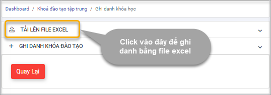Hình 2

Hình 3

Hình 4
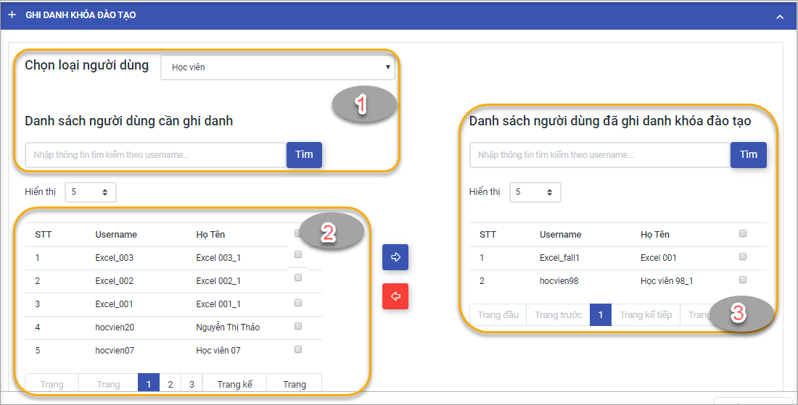Hình 5

Hình 6
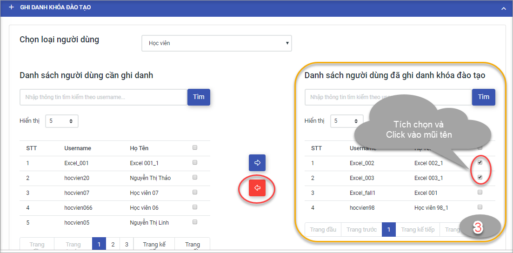Hình 7
XEM THÔNG TIN CHI TIẾT KHÓA ĐÀO TẠO TẬP TRUNG
-
Tại màn hình Danh sách thống kê khóa đào tạo tập trung, NSD click vào mã khóa đào tạo tập trung . (Hình 1)
Hệ thống hiển thị màn hình cho phép xem chi tiết thông tin của khóa đào tạo tập trung được chọn, bao gồm:
- Ảnh đại diện khóa học
- Tên khóa học
- Mã khóa học
- Danh mục khóa học
- Điểm qua môn
- Thời gian bắt đầu
- Thời gian kết thúc
- Mô tả khóa học
- Danh sách học viên trong khóa học: tiến trình của từng học viên, bảng điểm chi tiết, trạng thái của từng học viên
- Danh sách điểm danh học viên trong khóa học (Hình 2)
- Sửa thông tin khóa đào tạo tập trung: NSD click chọn button
 , hệ thống hiển thị màn hình Chỉnh sửa thông tin khóa đào tạo. NSD thực hiện nhập các thông tin mới -> click button
, hệ thống hiển thị màn hình Chỉnh sửa thông tin khóa đào tạo. NSD thực hiện nhập các thông tin mới -> click button  để hoàn thành thao tác. NSD có thể click button 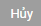 để hủy thao tác sửa thông tin khóa đào tạo online. (Hình 3)
để hoàn thành thao tác. NSD có thể click button 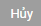 để hủy thao tác sửa thông tin khóa đào tạo online. (Hình 3)

Hình 1
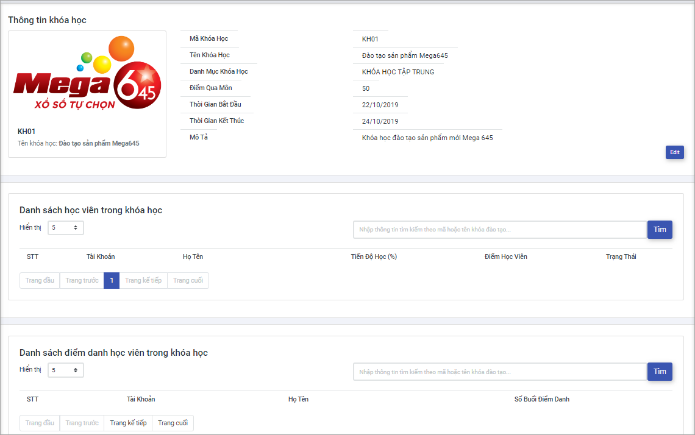Hình 2
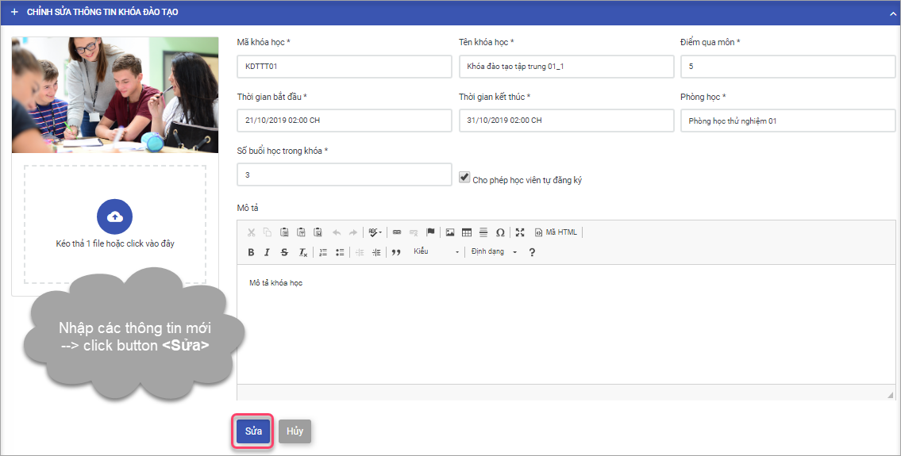Hình 3
PHÊ DUYỆT/HỦY PHÊ DUYỆT KHÓA ĐÀO TẠO TẬP TRUNG
Tại khung menu bên trái, NSD chọn menu Quản lý đào tạo -> Khóa đào tạo -> Khóa đào tạo tập trung. Hệ thống hiển thị danh sách thống kê các khóa học tập trung hiện tại, trong cột Trạng thái
- NSD click chọn nút sang màu xanh
 để phê duyệt khóa học
để phê duyệt khóa học - NSD click chọn nút sang màu trắng để hủy phê duyệt khóa học
ĐIỂM DANH
- Bước 1: NSD chọn menu Quản lý đào tạo -> Khóa đào tạo -> Khóa đào tạo tập trung. Trên danh sách thống kê Khóa đào tạo tập trung hiện tại, NSD thực hiện click button sử nội dung . (Hình 1)
- Bước 2: NSD click vào chức năng Điểm danh (Hình 2)
- Bước 3: Trên tab Điểm danh NSD thực hiện click vào button Có/ Vắng để điểm danh học viên tham gia khóa đào tạo tập trung. Click button
 để hoàn thành thao tác điểm danh. (Hình 3)
để hoàn thành thao tác điểm danh. (Hình 3)
Hệ thống hiển thị màn hình xác nhận thao tác điểm danh thành công. NSD click button OK để hoàn thành thao tác. - Xem lịch sử điểm danh: NSD thực hiện click vào tab Lịch sử trên màn hình điểm danh để xem thông tin lịch sử điểm danh đối với khóa học (Hình 4)
Hình 1
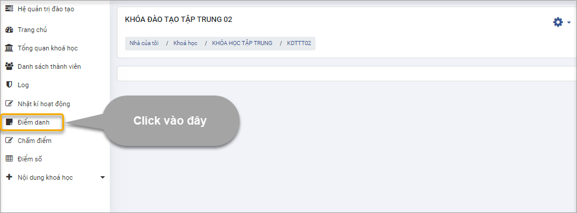Hình 2
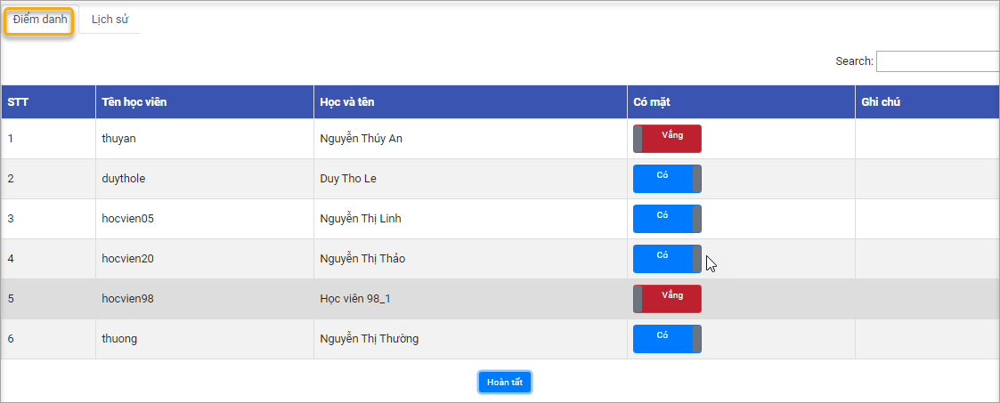Hình 3
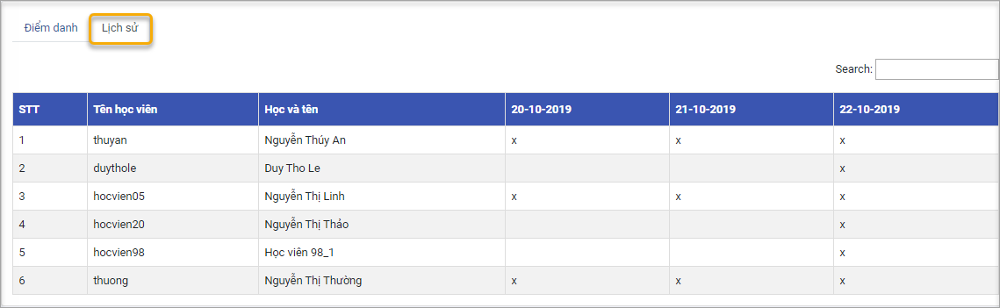Hình 4
NHẬP ĐIỂM
- Bước 1: NSD chọn menu Quản lý đào tạo -> Khóa đào tạo -> Khóa đào tạo tập trung -> click button
 . (Hình 1)
. (Hình 1) - Bước 2: Click vào chức năng Chấm điểm (Hình 2)
- Bước 3: Tại màn hình thống kê danh sách học viên trong khóa học, NSD thực hiện nhập điểm cho học viên tại cột Đểm cuối khóa -> Bấm Enter để hoàn thành nhập điểm (Hình 3)
- Xem danh sách điểm số của cả khóa: Tại khung menu bên trái, NSD chọn menu Quản lý đào tạo -> Khóa đào tạo -> Khóa đào tạo tập trung. Trên danh sách thống kê Tổng số khóa đào tạo tập trung hiện tại, NSD thực hiện click button sử nội dung . (Hình 4)
Hệ thống chuyển sang màn hình cho phép xem thông tin điểm số của tất cả học viên trong khóa đào tạo. NSD thực hiện click 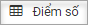. Hệ thống hiển thị màn hình cho phép xem điểm số của tất cả học viên trong khóa đào tạo.

Hình 1

Hình 2
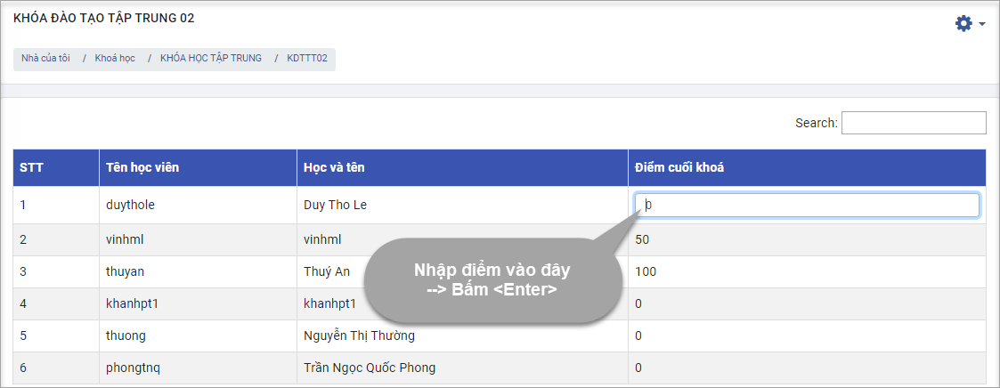Hình 3
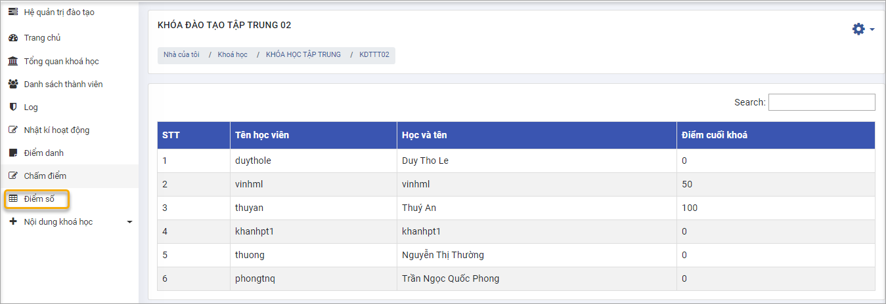Hình 4

4.2.3 Tạo mới khóa từ thư viện
- Bước 1: Tại khung menu bên trái, NSD chọn menu Quản lý đào tạo -> Khóa đào tạo -> Tạo mới khóa từ thư viện. (Hình 1)
- Bước 2: NSD nhập các thông tin, bao gồm: Hình ảnh đại diện của khóa học, Chọn danh sách thư viện khóa học, Nhập mã khóa học, Tên khóa học, Danh mục khóa học, Thời gian bắt đầu, Thời gian kết thúc, Điểm qua môn, Cho phép học viên tự đăng ký, Khóa học làm bài kiểm tra, Mô tả khóa học
- Bước 3: Click button
 để hoàn thành thêm mới khóa từ thư viện, hệ thống sẽ hiển thị thông báo Nhân bản khóa học thành công. NSD thực hiện Click button
để hoàn thành thêm mới khóa từ thư viện, hệ thống sẽ hiển thị thông báo Nhân bản khóa học thành công. NSD thực hiện Click button  để hoàn thành thao tác tạo khóa học từ thư viện
để hoàn thành thao tác tạo khóa học từ thư viện
Hình 1
4.3 Nhóm chức năng chứng chỉ
4.3.1 Danh sách học viên
Tại khung menu bên trái, NSD chọn menu Quản lý đào tạo -> Chứng chỉ -> Danh sách học viên. Hệ thống hiển thị giao diện với 2 vùng:
- Vùng 1: Danh sách học viên chưa cấp mã chứng chỉ
- Vùng 2: Danh sách học viên đã được cấp mã chứng chỉ
4.3.2 Cấp chứng chỉ cho học viên
- Bước 1: Tìm kiếm học viên chưa được cấp chứng chỉ: Tại vùng 1 Danh sách học viên chưa được cấp mã chứng chỉ, NSD nhập thông tin học viên, click button . Hệ thống hiển thị danh sách thống kê những học viên thỏa mãn điều kiện tìm kiếm (Hình 1, 2)
-
Bước 2: Cấp mã
- Cấp mã cho từng học viên: Tại vùng 1, NSD tích chọn học viên cần cấp mã, click button
 . (Hình 3)
. (Hình 3) - Cấp mã học viên với số lượng lớn: Tại vùng 1, NSD thực hiện tích chọn tất cả học viên, click button
 (Hình 4)
(Hình 4)
- Cấp mã cho từng học viên: Tại vùng 1, NSD tích chọn học viên cần cấp mã, click button
Hình 1
Hình 2
Hình 3

Hình 4
5. Quản lý Báo cáo
5.1 Danh sách khảo sát
Trên thanh menu trái thực hiện truy cập “Báo cáo” -> chọn chức năng “Quản lý Survey” -> chọn chức năng “Danh sách Survey” giao diện quản lý hiển thị với các chức năng như hình bên

1. Tìm kiếm: Người dùng có thể chọn tìm kiếm theo tên survey bằng cách chọn 
2. Chọn ngày bắt đầu ngày kết thúc: người dùng có thể lọc các survey theo ngày bắt đầu hoặc ngày kết thúc
3. Tạo mới
Để tạo mới Survey click sau đó thực hiện các bước sau:
- Bước 1: Nhập các thông tin vào các trường bắt buộc phải nhập có dấu “*”, Mã, Tên, Thời gian bắt đầu, Thời gian kết thúc
- Bước 2: Nhập thông tin mô tả về survey, với các định dạng mô tả như hình bên
- Bước 3: Chọn để hoàn tất việc tạo survey, chọn
 để hủy
để hủy
4. Xem giao diện trình bày survey: người dùng chọn
Hệ thống hiển thị giao diện trình bày survey để người dùng xem được cách bố trí chi tiết của survey như sau:

5. Thêm câu hỏi vào survey
Để thêm câu hỏi vào survey người dùng thực hiện các bước sau:
- Bước 1: Chọn survey cần thêm câu hỏi, trường này bắt buộc phải chọn
- Bước 2: Chọn loại câu hỏi, trường này bắt buộc phải chọn
- Bước 3: Gõ tên câu hỏi, trường này bắt buộc phải nhập
- Bước 4: Nhập nội dung câu hỏi với các định dạng trong khung, trường này bắt buộc phải nhập
- Bước 5: Chọn
 để thêm đáp án cho câu hỏi, chọn để xóa đáp án cho câu hỏi, sau khi hoàn tất chọn
để thêm đáp án cho câu hỏi, chọn để xóa đáp án cho câu hỏi, sau khi hoàn tất chọn  để hoàn tất thêm câu hỏi vào survey
để hoàn tất thêm câu hỏi vào survey

6. Sửa thông tin survey
Để sửa thông tin survey người dùng cũng làm tương tự các bước như việc tạo survey ở phần 3 sau đó chọn  để hoàn tất việc sửa thông tin survey
để hoàn tất việc sửa thông tin survey

7. Xóa
Để xóa survey người dùng chọn  , màn hình hiển thị thông báo người dùng chọn “OK” để hoàn tất việc xóa, chọn “Cancel” để hủy
, màn hình hiển thị thông báo người dùng chọn “OK” để hoàn tất việc xóa, chọn “Cancel” để hủy

5.2 Danh sách câu hỏi
Xem danh sách các câu hỏi người dùng có thể xem theo lựa chọn survey và chọn loại câu hỏi hoặc gõ tên câu hỏi để xem bằng cách chọn  , như hình bên:
, như hình bên:
Tại giao diện này người dùng có thể Tạo mới câu hỏi  , chỉnh sửa và xóa câu hỏi.
, chỉnh sửa và xóa câu hỏi.

5.3 Khôi phục khảo sát
Trên thanh menu trái thực hiện truy cập “Báo cáo” -> chọn chức năng “Quản lý khảo sát” -> chọn chức năng “Khôi phục khảo sát” giao diện quản lý hiển thị với các chức năng như hình bên.
Click chọn để khôi phục, chọn để xóa khảo sát

5.4 Thống kê sơ bộ
Tại chức năng thống kê sơ bộ người dùng có thể xem các đồ thị thống kê về số lượng Tỉnh thành, thống kê số lượng Đại lý, số lượng Điểm bán.
Xem chi tiết các thông số thống kê về Nhân viên bán hàng và thống kê khóa đào tạo như hình bên:

5.5 Báo cáo đánh giá
Người dùng có thể xem chi tiết báo cáo đánh giá bằng cách thực hiện từng bước như sau:
- Bước 1: Lựa chọn Khu vực cần xem báo cáo đánh giá
- Bước 2: Lựa chọn Tỉnh thành
- Bước 3: Lựa chọn Đại lý cần xem báo cáo
- Bước 4: Lựa chọn Điểm bản
- Bước 5: Click vào
 để thực hiện xem báo cáo thống kê chi tiết như hình bên:
để thực hiện xem báo cáo thống kê chi tiết như hình bên:
(Có thể chọn 1 hoặc nhiều tiêu chí để thực hiện bước xem báo cáo)
6 Cấu hình hệ thống
Cấu hình chung
Người dùng có thể thay đổi một số tùy chỉnh cho hệ thống bằng cách tích chọn hoặc bỏ chọn ô  , tích chọn để cho phép hệ thống hiển thị các chức năng và thông tin hiển thị liên quan, như hình bên
, tích chọn để cho phép hệ thống hiển thị các chức năng và thông tin hiển thị liên quan, như hình bên

Cấu hình mẫu email
Người dùng có thể cấu hình chỉnh sửa các template email như hình bên:
Thực hiện chỉnh template cho email bằng cách chọn  , giao diện chỉnh sửa hiển thị như hình bên:
, giao diện chỉnh sửa hiển thị như hình bên:

Người dùng chỉnh sửa template với những định dạng và nội dung email trong phần mô tả, chọn  để hoàn tất việc chỉnh sửa template, màn hình hiển thị sửa thành công.
để hoàn tất việc chỉnh sửa template, màn hình hiển thị sửa thành công.

Gửi notification
Để gửi thông báo người dùng cần gõ tên người nhận
Gõ nội dung thông báo trong ô Nội dung chọn Gửi để gửi thông báo đến người nhận